Guide
Window by window
The quick start, demo expectations, inputs and outputs and troubleshooting of every window. The same text is in each window under ? Help.
In every window: work down the numbered step cards on the left (Load → Settings → Run → Save), read the status bar at the bottom, and use Try demo data to check the numbers below. To report a problem, open a GitHub issue with your MATLAB version, the window, what you clicked and the exact message.
Getting started
Launcher
NeuroAnalyzer: analysis toolbox for LDF, electrophysiology, imaging and response features. More on this pipeline.
Quick start
- In the launcher, click Set folders and choose your Import folder (raw data) and Export folder (results). You can use one folder for both.
- Find the card for your data (LDF, Electrophysiology, Imaging, Response features) and click its numbered steps in order.
- In every window, work down the numbered step cards on the left: Load → Settings → Run → Save. The teal button is the recommended next action; greyed-out buttons are not possible yet.
- Read the status bar at the bottom of each window: it says what happened and what to do next.
- Stuck? Click ? Help in the window header for its quick start and troubleshooting.
- Many files with the same settings? Use Batch processing in the launcher. To keep an analysis, click Save session… (and Report (PDF)…) in the last step of any window.
{kind=link}
Inputs and outputs
In
- LabChart .mat export (LDF)
- TDT tank / block folder, Intan .rhd, Open Ephys binary folder or NWB 2.x file (electrophysiology; TDT needs the TDT MATLAB SDK)
- Image stack .mat or multi-frame TIFF (imaging)
- Any saved result with a time vector and signal (response features)
Out
- Intermediate .mat files that the next step loads (cropped LDF, LDF trials, LFP, MUA)
- Final results: grand averages, ERP/CSD, spike sorting, ROI time series, feature tables (.csv / .mat)
Overview
The four pipelines
| Pipeline | Windows, in order | Starts from | Ends with |
|---|---|---|---|
| LDF (Laser Doppler Flowmetry) | 1 Extract → 2 Process → 3 Average | LabChart .mat export | Trials .mat; grand average (mean ± SD) |
| Electrophysiology | 1 Extract → 2 LFP analysis or 2 MUA analysis | TDT tank, Intan .rhd, Open Ephys folder or .nwb | ERP, CSD, time–frequency; spike times, clusters, rasters, rates |
| Imaging | ROI analysis | Image stack (.mat or TIFF) | Brightness, movement, ΔF/F, speed, kymograph, vessel diameter |
| Response features | Signal Characterization | LDF trials, LFP / ERP .mat, or any t and y | Feature table: latency, FWHM, AUC, rise/decay; group statistics and figures |
| Batch | Batch processing | A folder of files for any of the pipelines above | One summary table (CSV / MAT) and a log |
Sessions and reports
- Every analysis window can save a session (inputs with checksums, settings, results, notes), reopen it later, and write a one-page PDF report. See Sessions and reports.
Typical order
Each step saves a .mat file that the next step loads, so run the steps of a card from left to right. Signal Characterization comes last: use it on the trials saved by LDF Process, on the ERP exported by LFP analysis, or on the LFP saved by Extract Ephys, to turn responses into numbers.
Project folders
- Import folder: where Load dialogs start (your raw data).
- Export folder: where Save / Export dialogs start (your results).
- Both are stored as MATLAB preferences (
NeuroAnalyzer.ImportDir,NeuroAnalyzer.ExportDir), so they are remembered between sessions. The launcher asks for them the first time; change them with Set folders.
Requirements
- MATLAB R2021a or later.
- Signal Processing Toolbox: filtering, downsampling and spike detection (LDF Process, Extract Ephys, MUA analysis).
- Image Processing Toolbox: drawing a ROI or line in ROI analysis.
- TDT MATLAB SDK: only for Extract Ephys. See README, section "Install the TDT SDK".
The launcher status bar shows whether the Signal Processing Toolbox and the TDT SDK were found.
Where to get help
Every window has a ? Help button that opens its topic here. To report a bug or ask for a feature, click Report a problem or open https://github.com/alesuarez92/NeuronalDataAnalyzerLab/issues. Include your MATLAB version, the window, what you clicked and the exact message from the status bar or error dialog.
Troubleshooting: 5 common problems
| Problem or message | What to do |
|---|---|
| Undefined function 'Main', 'UIKit' or 'HelpApp' | The toolbox is not on the MATLAB path. Run addpath(genpath('<toolbox folder>')), optionally savepath, then launch with NeuroAnalyzer. |
| Launcher warns "Signal Processing Toolbox was not found" | Filtering, downsampling and spike detection will fail. Install it from Home → Add-Ons, or check your license with ver. |
| Extract Ephys: "TDTbin2mat" undefined | The TDT MATLAB SDK is missing. Follow README → "Install the TDT SDK" (place TDTMatlabSDK/ under Utilities/). |
| A file dialog does not appear | It may have opened behind the app window; check the taskbar / Dock. |
| Figures in this help say "not found" | Launch with NeuroAnalyzer from the toolbox folder so the docs/ folder can be found. |
LDF pipeline · step 1 of 3
Extract LDF Data
Load a LabChart LDF export, keep the time range of the experiment and save it. More on this pipeline.
Quick start
- Load LDF export: click Load file... and choose the LabChart .mat export. Stimulus (channel 6) and LDF (channel 8) are plotted; file name, sampling rate and duration are shown.
- Choose time range: type Start and End (s), click Pick on plot and click twice (start, end) on either plot, or click Full range.
- Crop: click Crop to range. The cropped signals replace the full recording in the plots.
- Save: click Save cropped data... and choose a file name. Open this file next in LDF Process.
- Session / report (optional): in step 4, Save session… stores the export file (with checksum), the range and the crop; Open session… redoes them; Report (PDF)… writes a one-page summary. See Sessions and reports.
{kind=link}
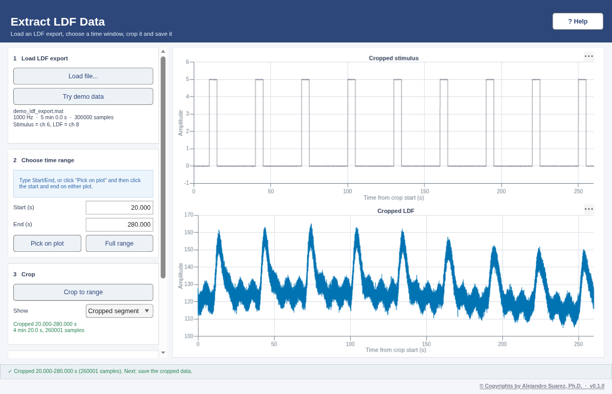
DEMO DATA — synthetic, generated by core/DemoData.mDemo data
- Data: LabChart-style export, 8 channels, 300 s at 1000 Hz. Channel 6 = stimulus: 9 pulses of 5 s every 30 s from t = 30 s. Channel 8 = LDF: ~120 PU baseline with slow drift, vasomotion (0.13 Hz), a cardiac ripple (6 Hz) and noise.
- What you should see: after each stimulus pulse the LDF rises by about +30 PU, peaking about 4 s after the onset, and returns to baseline within ~12 s.
- Try: crop 20 to 280 s (this is exactly what the LDF Process demo file contains) and save; the cropped plots start at t = 0 with the first pulse at 10 s.
Inputs and outputs
In
- LabChart export
.matwithdata(all channels, concatenated),datastartanddataend(start / end index of each channel) - Optional:
samplerate(Hz; 1000 Hz is assumed when missing),titles,unittext, comments - Stimulus = channel 6, LDF = channel 8
Out
- Cropped
.matwithstim(stimulus),LDF(flow),t(time in s, 0 at the crop start) andFs(Hz)
Troubleshooting: 4 common problems
| Problem or message | What to do |
|---|---|
| "Not a valid LDF export: file must contain data, datastart, and dataend" | The file is not a LabChart export. Export the recording from LabChart as a MATLAB .mat file. |
| "Channel indices out of range" | The file has fewer than 8 channels. The stimulus must be on channel 6 and the LDF on channel 8. |
| Sampling rate shows 1000 Hz but the recording used another rate | samplerate is missing from the export; re-export with it, otherwise every time axis is wrong. |
| "Start time must be less than End time" / "Range must be within …" | Check the Start and End values (seconds, inside the recording). |
LDF pipeline · step 2 of 3
LDF Processing
Downsample and filter the cropped LDF, cut trials around each stimulus and save them. More on this pipeline.
Quick start
- Load cropped LDF: click Load file... and choose the file saved by LDF Extract.
- Filter / downsample (optional): click Settings..., choose downsampling and filter, click Apply. The Filter response tab shows the filter; Undo returns to the loaded data. See the Filtering topic.
- Segment trials: set Stim threshold (shown as a dashed line on the stimulus), Pre-onset and Post-onset (s) and Min interval (s), then click Segment trials. All trials and the mean ± SD appear in the Trials tab.
- Save trials: click Save trials.... Choosing an existing trials file appends the new trials to it (time axes must match). Open the file(s) next in LDF Average.
- Session / report (optional): in step 4, Save session… stores the file (with checksum), filter and segmentation settings; Open session… re-runs them; Report (PDF)… writes a one-page summary. See Sessions and reports.
{kind=link}
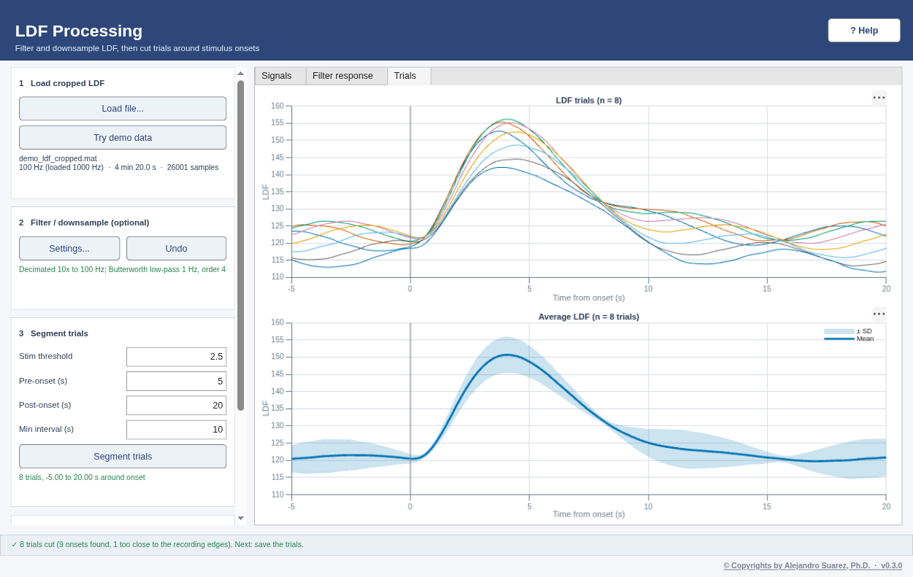
DEMO DATA — synthetic, generated by core/DemoData.mDemo data
- Data: the cropped demo recording (20–280 s of the LDF export, 1000 Hz): 9 stimulus pulses of 5 s, the first at 10 s, then every 30 s.
- Try: downsample 10x, low-pass ~1 Hz (removes the 6 Hz cardiac ripple), then segment with pre = 5 s and post = 20 s.
- What you should get: 8 complete trials (the last pulse is too close to the end for a 20 s window). The mean response rises after 0 s and peaks ~4 s after onset at ~+30 PU above a ~120 PU baseline.
Inputs and outputs
In
.matfrom LDF Extract withstim,LDF,t,Fs(all four are required)
Out
.matwithsegmentedLDF(trials × samples),segmentedTime(s, 0 = stimulus onset, negative = before) andFs
Troubleshooting: 5 common problems
| Problem or message | What to do |
|---|---|
| "Invalid LDF file. Missing variable(s): …" | Load the file saved by LDF Extract (it contains stim, LDF, t, Fs), not the raw LabChart export. |
| No trials found | The threshold is above the stimulus amplitude or the minimum ISI is too long. Look at the stimulus plot and lower the threshold. |
| Filter error / cutoff must be below Nyquist | Cutoffs must be below half the sampling rate after downsampling (e.g. 1000 Hz with 10x → Nyquist 50 Hz). |
| Filtering fails with an undefined function (butter, filtfilt, decimate) | The Signal Processing Toolbox is missing (see Welcome → Requirements). |
| "Time axes do not match" when saving | You are appending to a file made with different pre/post times or sampling rate. Save to a new file instead. |
LDF pipeline · reference
Filtering (reference)
How the digital filters in LDF Process (and Extract Ephys) change a signal. More on this pipeline.
Quick start
- In LDF Process, click Settings (step 2).
- Choose Downsample first: it sets the new sampling rate and therefore the highest usable cutoff (Nyquist = half the rate).
- Pick the filter type and enter the cutoff(s) in Hz; start with order 4.
- Click Apply and compare the filtered trace with the original in the plots; use Undo to try other settings.
Demo data
- Data: the cropped demo LDF (1000 Hz). Besides the ~+30 PU responses it contains a slow drift (period 400 s), vasomotion at 0.13 Hz (±3 PU), a cardiac ripple at 6 Hz (±1.5 PU) and white noise.
- Low-pass 1 Hz (after 10x downsampling): the 6 Hz ripple and most noise disappear, the responses keep their shape and timing (zero-phase filtering: the peak stays ~4 s after onset).
- High-pass 0.2 Hz: removes drift and vasomotion but also shrinks and distorts the slow (~5 s wide) responses, a good example of a cutoff that is too high for LDF.
How the filters work
Filters remove or keep certain frequencies in a signal:
- Low-pass: keeps low frequencies, removes high ones (e.g. smooths noise). One cutoff: frequencies above it are attenuated.
- High-pass: removes low frequencies, keeps high ones (e.g. removes slow drift). One cutoff: frequencies below it are attenuated.
- Band-pass: keeps the band between a low and a high cutoff, e.g. 0.5–5 Hz for LDF.
- Notch: removes a narrow band, e.g. 50 / 60 Hz line noise.
Order: a higher order gives a steeper roll-off (sharper cutoff) but can ring or become unstable; 2–4 is usually enough.
Nyquist: cutoffs must be below half the sampling rate. With downsampling, use the new rate: 1000 Hz / 10 = 100 Hz → cutoffs < 50 Hz.
Design: Butterworth has a flat pass-band; Chebyshev I is steeper but has pass-band ripple; FIR is always stable but needs a high order for a sharp cutoff.
Troubleshooting: 3 common problems
| Problem or message | What to do |
|---|---|
| Cutoff rejected / filter unstable | Keep cutoffs between 0 and Nyquist, low < high for band-pass, and lower the order. |
| The filtered signal looks shifted or distorted at the edges | Edge transients are normal for strong filters; crop a little extra in LDF Extract so trials are away from the edges. |
| Undefined function butter / cheby1 / fir1 | Install the Signal Processing Toolbox. |
LDF pipeline · step 3 of 3
Average LDF Viewer
Pool the trials of one or more trial files and plot the grand average (mean ± SD). More on this pipeline.
Quick start
- Load trial files: click Add files... and select one or more files saved by LDF Process (multi-select). You can add more files later; Clear all starts over.
- Options: tick Relative to baseline to subtract each trial's pre-stimulus mean.
- Grand average: click Plot grand average to see the mean ± SD across all trials.
- Session / report (optional): in step 3, Save session… stores every trial file (with checksum) and the option; Open session… reloads them and redraws the average; Report (PDF)… writes a one-page summary. See Sessions and reports.
{kind=link}
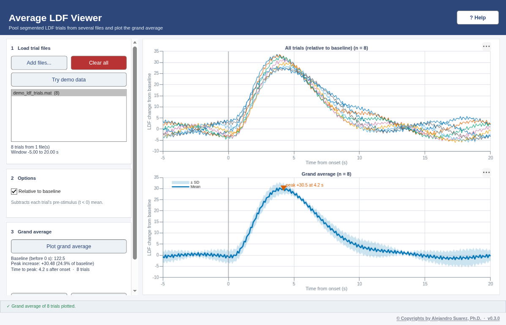
DEMO DATA — synthetic, generated by core/DemoData.mDemo data
- Data:
demo_ldf_trials.mat, 8 trials from −5 to 20 s at 10 Hz (0 = stimulus onset). - What you should get: the grand average is flat before 0 s (~120 PU), rises after onset and peaks ~4 s after onset at ~+30 PU, then returns to baseline by ~12–15 s. The SD band shows the trial-to-trial vasomotion (a few PU).
- With Relative to baseline the curve starts at ~0 PU and peaks at ~+30 PU.
Inputs and outputs
In
- One or more
.matfiles withsegmentedLDFandsegmentedTime(from LDF Process)
Out
- Plots of all trials and of the grand average (mean ± SD); the file list shows how many trials came from each file
Troubleshooting: 3 common problems
| Problem or message | What to do |
|---|---|
| A file was skipped: time axes do not match | Re-segment it in LDF Process with the same pre/post times and downsampling as the other files. |
| A file adds no trials | It does not contain segmentedLDF / segmentedTime; load the file saved by Save trials. |
| "No pre-stimulus baseline available" | The trials start at t = 0. Segment again with pre > 0 s. |
Electrophysiology · step 1
Extract Ephys Data
Load a TDT, Intan, Open Ephys or NWB recording and extract the LFP and MUA signals for analysis. More on this pipeline.
Quick start
- Load recording: choose the Source (TDT tank, Intan .rhd, Open Ephys folder or NWB file), click Load recording… and select the tank / block folder, the .rhd file, the Open Ephys recording folder (or any folder above it) or the .nwb file. The channel lists are filled from the recording.
- Choose channels: pick the Stimulus channel (TDT: Whis; Intan: DIGITAL-IN / ANALOG-IN; Open Ephys: TTL line / ADC; NWB: stimulus TimeSeries or trials) and one or more raw channels (All / None help).
- Process: optionally Plot RAW; then Process LFP… (low-pass, 60 Hz notch, downsample) and/or Process MUA… (band-pass, default 300–3000 Hz).
- Save: Save LFP… / Save MUA…, choose which channels to keep and a file name (default
<recording>_LFP.mat/<recording>_MUA.mat). Open these files in LFP analysis / MUA analysis. Export NWB… writes the processed LFP and its stimulus channel as an NWB 2.x file (default<recording>_LFP.nwb). - Session / report (optional): in step 4, Save session… stores the recording (with checksum), channels and LFP / MUA settings; Open session… re-processes them; Report (PDF)… writes a one-page summary. See Sessions and reports.
{kind=link}
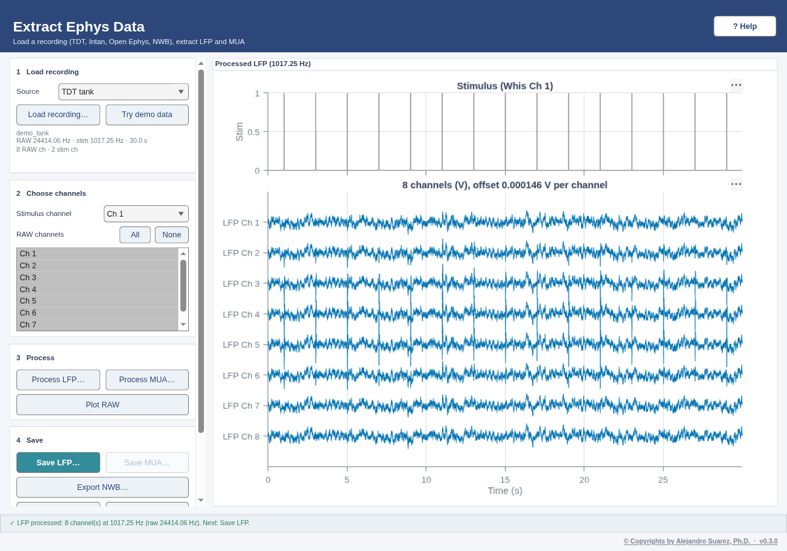
DEMO DATA — synthetic, generated by core/DemoData.mDemo data
- Data: a TDT-like demo block (30 s): 8 raw channels (
xRAW, 24414 Hz, electrodes 100 µm apart) and the whisker stimulus (Whis: 20 ms pulses every 2 s from 1 s, 15 stimuli). The demo tank is read by a built-in stand-in, so the TDT SDK is not needed for it. - Process LFP (low-pass, downsample to ~1017 Hz): each stimulus evokes a negative deflection at 15 ms and a positive one at 40 ms, largest on channel 4 and weaker with distance from it.
- Process MUA (300–3000 Hz): spikes on channels 3–5 (two units on channel 4, one on channel 5), denser in the 50 ms after each stimulus. Save both to try LFP and MUA Analysis.
- Other formats: choose a Source before Try demo data to open the first 6 s of demo channels 3–6 written as an Intan .rhd (20 kHz; stimulus on DIGITAL-IN-01 and a 1 V copy on ANALOG-IN-1), an Open Ephys folder (30 kHz; TTL line 1 and ADC1) or an NWB file (24414 Hz; the whisker stimulus TimeSeries and a trials table). There are 3 stimuli (1, 3 and 5 s). Process LFP gives 1000 Hz (Intan, Open Ephys) or 1017.25 Hz (NWB), with the evoked negative deflection at 15 ms, largest on RAW Ch 2 (= demo channel 4).
- Export NWB… after Process LFP, then choose Source NWB file and Load recording… with the exported file: the LFP opens at its LFP rate with the same channel names and stimulus.
Inputs and outputs
In
- TDT tank / block folder containing the
Whis(stimulus) andxRAW(raw neural) streams (needs the TDT MATLAB SDK,TDTbin2mat, underUtilities/TDTMatlabSDK/) - Intan RHD2000
.rhdfile (file format 1.0–3.x, traditional single-file format) - Open Ephys binary recording folder (GUI 0.5 or later:
structure.oebin,continuous.dat, TTL events) - NWB 2.x
.nwbfile with an ElectricalSeries in /acquisition or /processing
Out
- LFP
.mat:lfp_data(channels × samples),lfp_channels,lfp_fs,t_lfp,stim_data,stim_fs,t_stim - MUA
.mat:mua_data,mua_channels,mua_fs,t_mua,stim_data,stim_fs,t_stim,filterParams - NWB
.nwb(Export NWB…): LFP in volts in /processing/ecephys/LFP, the stimulus in /stimulus/presentation, electrodes with source channel names. Written with matnwb when installed, otherwise an NWB-style export (not validated).
Troubleshooting: 13 common problems
| Problem or message | What to do |
|---|---|
| "Undefined function TDTbin2mat" or tank does not load | Install the TDT MATLAB SDK: README → "Install the TDT SDK". The folder must be Utilities/TDTMatlabSDK/. |
| "The selected tank does not contain the required Whis and xRAW streams" | Select the block folder of a recording that stored both streams (stimulus as Whis, raw data as xRAW). |
| "Downsample rate must be below the raw rate" | Enter a target rate (Hz) lower than the raw sampling rate shown after loading. |
| Filtering fails (butter, filtfilt, iirnotch undefined) | The Signal Processing Toolbox is missing. |
| Save is disabled | Run Process LFP / Process MUA first; Save stores the last processed result. |
| "not an Intan RHD2000 file: magic number …" | The file is not an Intan .rhd data file. Intan stimulation files (.rhs) are not supported. |
| "holds only a header (no data blocks)" | The recording was saved as "one file per signal type" or "one file per channel" (info.rhd + .dat files). Save it in the traditional single-file .rhd format. |
| "… is not a whole number of … data blocks" | The .rhd file is truncated (for example the recording was interrupted). Re-export it from the Intan software. |
| "No structure.oebin found" | Choose the Open Ephys recording folder (…/Record Node */experiment*/recording*) or a folder above it. Only the binary format is supported; for the older "Open Ephys format" (.continuous files), re-save as binary. |
| "not an HDF5 file" / "without the NWB root attribute nwb_version" / "No ElectricalSeries" | The file is not an NWB 2.x file with extracellular data. NWB 1.x files are not supported. |
| The stimulus channel list shows "(no stimulus channel)" | The recording has no digital / analog input, TTL events or stimulus series. LFP / MUA files are still saved, with an all-zero stimulus. |
| Export NWB says "NWB-style file (not validated)" | matnwb is not installed. The file follows the NWB 2.7 layout; install matnwb (https://github.com/NeurodataWithoutBorders/matnwb) to write it with the official schema classes, or validate it with nwbinspector. |
| Loading a long recording runs out of memory | The whole recording is loaded (as for TDT tanks). Split long recordings, or export a shorter segment from the acquisition software. |
Electrophysiology · step 2 (LFP)
LFP / ERP Analysis
Average the LFP around each stimulus (ERP), compute current source density (CSD) and analyse oscillations (spectrum, spectrogram, ERSP / ITPC, band power). More on this pipeline.
Quick start
- Load LFP file: click Load LFP file… and choose the LFP file saved by Extract Ephys.
- Channels: select the channels to analyse (All / None).
- ERP analysis: click Run ERP…, set pre- and post-stimulus time (s), stimulus threshold and minimum ISI (s), click OK. The number of averaged epochs is reported.
- CSD: enter Spacing (µm) and the Channel order from top to bottom (at least 3 channels of the last ERP), then click Compute CSD.
- Export: click Export ERP / CSD… to save a .mat that Signal Characterization can read.
- Time–frequency: choose the Channel, Frequencies (Hz) (lowest – highest), Wavelet cycles, Epoch (s) and Baseline (s). The band table (delta 1–4, theta 4–8, alpha 8–13, beta 13–30, gamma 30–80 Hz) holds common conventions: edit the limits for your preparation and tick Plot for the bands to show. Try oscillation demo loads a demo with known theta and gamma oscillations and selects channel 4.
- Time–frequency plots: click Spectrum (power spectrum of the whole recording), Spectrogram (power over time with the stimuli marked), ERSP / ITPC (power change in dB and phase locking around each stimulus) and Band power (% change of each ticked band around the stimulus, mean ± SEM). Each opens its tab. ERSP and Band power use the stimulus onsets found with the ERP threshold (0.5 until you run the ERP).
- Session / report (optional): in step 5, Save session… stores the file (with checksum) and the ERP, CSD and time–frequency settings and results; Open session… re-runs them; Report (PDF)… writes a one-page summary. See Sessions and reports.
{kind=link}
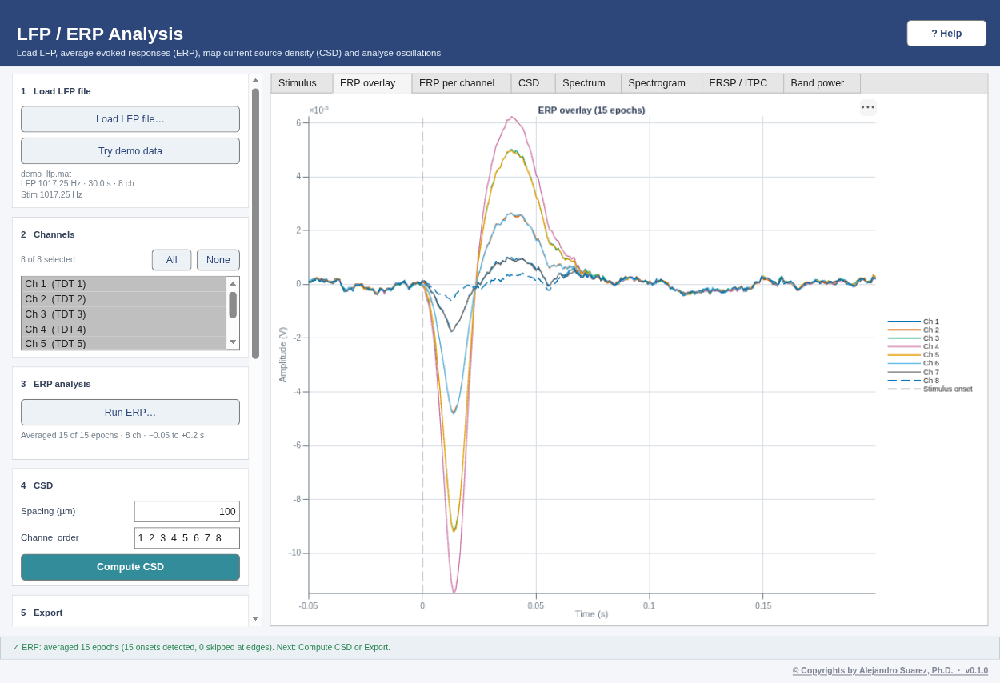
DEMO DATA — synthetic, generated by core/DemoData.mDemo data
- Data:
demo_lfp.mat, 8 channels at 1017.25 Hz, 30 s, 100 µm spacing; 15 stimuli every 2 s from 1 s. - ERP (e.g. pre 0.05 s, post 0.2 s): 15 epochs; N1 (negative) at ~15 ms (about −120 µV at channel 4) and P2 (positive) at ~40 ms; both are largest at channel 4 and fall off over ~150 µm (channels 2–6).
- CSD (spacing 100 µm, order 1–8): a current sink at channel 4 at ~15 ms, flanked by sources above and below (channels 2–3 and 5–6).
- Oscillation demo (Try oscillation demo): the same LFP plus 6 Hz theta (40 µV, on every channel, not phase-locked to the stimuli) and a 40 Hz gamma burst (10 µV, 50–250 ms after each stimulus, channels 3–5, phase-locked). Channel 4 is chosen.
- Spectrum: 1/f background with a clear peak at ~6 Hz (theta) and a small bump near 40 Hz.
- Spectrogram (2–80 Hz): a steady band at 6 Hz, and short 40 Hz patches just after each dashed stimulus line.
- ERSP / ITPC (2–80 Hz, 7 cycles, baseline −0.4 to −0.1 s): about +10 to +12 dB at 36–44 Hz between 50 and 250 ms, ITPC ≈ 0.97 there, and ≈ 0 dB before the stimulus and after ~0.3 s. The ERP itself (N1 / P2) adds a brief broadband increase with high ITPC in the first ~50 ms. On channel 8 (no gamma) there is no 40 Hz increase. 14 of the 15 stimuli are used (the last epoch would run past the end of the recording), and 13 at the lowest frequencies.
- Band power (channel 4): the ERP itself (N1 / P2) gives a very large, brief increase in the first ~50 ms in every band, so the y-axis is scaled to it (the status bar's "largest change" therefore looks from 50 ms on); the gamma burst (roughly +350 to +600 %) is the plateau at 0.05–0.25 s. Theta also swings around the ERP. On channel 8 (far from the ERP, no gamma) theta stays flat (~0 %): theta is not modulated by the stimuli.
Inputs and outputs
In
- LFP
.matfrom Extract Ephys:lfp_data,stim_data,t_lfp,t_stim,lfp_fs,stim_fs(all required)
Out
- Tabs: Stimulus (threshold and detected onsets), ERP overlay, ERP per channel (mean ± SD), CSD map
- Export
.mat:t,y(ERP averaged over channels),erp_avg,erp_std,erp_channels,n_epochs,onset_times,erp_params, andcsdwhen computed - Time–frequency tabs: Spectrum (Welch PSD, log–log, bands shaded), Spectrogram (STFT power in dB, dashed stimulus onsets), ERSP / ITPC (dB vs baseline on a blue–white–red scale centred at 0; ITPC 0–1), Band power (% change vs baseline, mean ± SEM per band)
Troubleshooting: 10 common problems
| Problem or message | What to do |
|---|---|
| "Missing variable(s)" when loading | Load the file written by Extract Ephys → Save LFP, not the MUA file or a raw tank. |
| "No stimulus onsets detected. Check the threshold." | Look at the stimulus tab and set the threshold between baseline and stimulus amplitude (the stimulus is mean-subtracted first). |
| "No complete epochs" | All onsets are too close to the recording start / end for the pre/post window. Shorten pre/post. |
| "CSD needs at least 3 channels" / order error | Run the ERP with ≥ 3 channels and list only those channels in the CSD order. |
| "No stimulus onsets detected" in ERSP / ITPC or Band power | These use the ERP stimulus threshold and minimum ISI (0.5 and 0.5 s until the ERP has been run). Run the ERP (step 3) with a threshold that suits the Stimulus tab, then try again. |
| "The highest frequency must be below the Nyquist frequency" | Enter a highest frequency below half the LFP sampling rate (e.g. < 508 Hz for 1017 Hz data). |
| "The baseline window … lies outside the epoch window" | Keep Baseline (s) inside Epoch (s), e.g. epoch −0.5 to 1 s and baseline −0.4 to −0.1 s. |
| ERSP uses fewer trials at low frequencies, or low rows are blank | Low-frequency wavelets are long (3·cycles / (2π·f) s each side); trials whose wavelet would run past the recording start or end are left out at those frequencies. Raise the lowest frequency or use fewer cycles. |
| Band power says n is smaller for delta / theta, or "No epochs far enough from the recording edges" | The band filter needs about 1 s of data on each side of an epoch; trials near the start or end of the recording are left out for that band. |
| A band-table edit is undone | Limits must be numbers ≥ 0 with Low < High; the previous value is restored and the status bar says why. |
Electrophysiology · step 2 (MUA)
MUA Analysis
Detect and sort spikes in the MUA signal, check their quality and plot firing rates. More on this pipeline.
Quick start
- Load MUA file: click Load MUA file... and choose the MUA file saved by Extract Ephys. Channels and whether a stimulus is present are shown.
- Channel & segments: choose the channel; optionally tick Segment by stimulation onsets (minimum ISI, threshold, pre / post-stimulus times) and pick a segment.
- Spike sorting: click Configure... (detection method, threshold, polarity, filtering, features, clustering, Auto-merge similar clusters with its Merge threshold (correlation), drift correction) and then Run. With auto-merge on (default), clusters whose mean waveforms have the same shape (correlation ≥ 0.95) and size (amplitude ratio ≥ 0.85) are joined; the status bar says what was merged.
- Clusters: select the clusters to show (Select all / Clear) and read the quality summary. Select two or more units and click Merge selected when they are the same neuron; select one unit and click Split selected to cut it in two; Undo reverses the last merge, split or auto-merge.
- Raster & PSTH tab: spikes of each selected unit (up to 4) around every stimulus onset (raster) and the mean firing rate ± SEM (PSTH). Set From (s), To (s) and Bin (ms); onsets use the threshold and minimum ISI of Segment by stimulation onsets (default 0.5, 1 s).
- Correlograms tab: autocorrelograms (diagonal) and cross-correlograms of up to 4 selected units; set Max lag (ms) and Bin (ms). The shaded band is ± the refractory period: a clean unit has (almost) no spikes there.
- Export: click Save results... to write spike times, cluster IDs, the sorting parameters, quality measures and the list of merges / splits (
info.clusterEdits) to .mat. - Session / report (optional): in step 5, Save session… stores the file (with checksum), all settings and the sorted clusters with your edits; Open session… restores them as saved (Undo still works); Report (PDF)… writes a one-page summary. See Sessions and reports.
{kind=link}
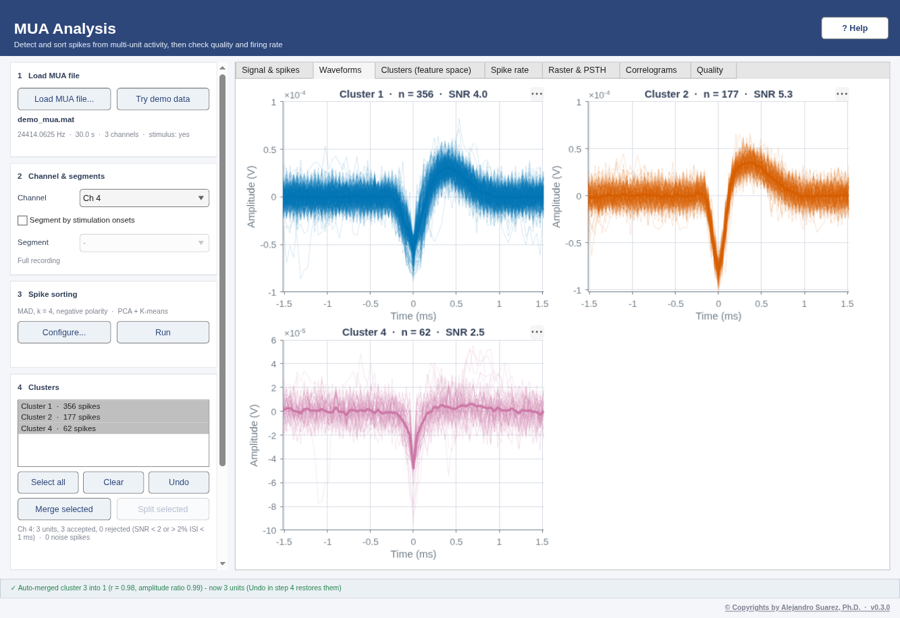
DEMO DATA — synthetic, generated by core/DemoData.mDemo data
- Data:
demo_mua.mat, channels 3–5 at 24414 Hz, 30 s, stimulus every 2 s from 1 s. Three units with negative spikes: unit 1 (~90 µV) and unit 2 (~50 µV) on channel 4, unit 3 (~110 µV) on channel 5 (seen weaker on channel 4). Noise ~10 µV. - The demo selects channel 4 and detection MAD, k = 4, negative polarity; click Run.
- What you should get: K-means alone tends to split one unit in two (e.g. 4 clusters, two with the same waveform); with Auto-merge similar clusters on (default) the status bar reports e.g. "Auto-merged cluster 3 into 1 (r = 0.98, amplitude ratio 0.99)" and 2–3 units remain on channel 4: unit 1 (~90 µV), unit 2 (~50 µV) and possibly unit 3 seen weaker from channel 5.
- Raster & PSTH (−0.1 to 0.3 s, 5–10 ms bins): 15 trials; every unit fires more 5–55 ms after each stimulus (unit 1: ~80 vs ~6 spikes/s). Correlograms: the autocorrelograms are empty within ±1 ms (2 ms refractory period); ISI violations ~0%.
Inputs and outputs
In
- MUA
.matfrom Extract Ephys:mua_data,mua_fs,t_mua,mua_channels - Optional
stim_data,stim_fs,t_stim(needed to segment by stimulus)
Out
- Plots: signal with detected spikes, waveforms, clusters in feature space, spike rate, quality (ISI histograms, alignment check)
- Saved
.mat:SpikeResults(spike times, cluster IDs, waveforms),SpikeSortParams,clusterQuality,info
Troubleshooting: 11 common problems
| Problem or message | What to do |
|---|---|
| "No stimulation data in the loaded file; cannot segment" | The MUA file has no stim_data; save it again from Extract Ephys (it stores the stimulus channel). |
| Very few or no spikes | Lower the threshold multiplier, check the polarity, or enable filtering before detection. |
| Many ISI violations in one cluster | It probably mixes units or noise: try another feature method, more clusters, or a higher threshold. |
| ICA / Wavelet not in the list | They need FastICA or the Wavelet Toolbox; use PCA instead. |
| Detection fails (findpeaks / butter undefined) | Install the Signal Processing Toolbox. |
| Two clusters have the same waveform | One neuron was split: select both and click Merge selected, or turn on Auto-merge similar clusters (Configure...). Lower the Merge threshold (e.g. 0.9) to merge more. |
| Auto-merge joined two different neurons | Click Undo (step 4) to restore the clusters, then raise the Merge threshold (e.g. 0.98) or turn Auto-merge off in Configure.... |
| One cluster mixes two waveforms or has many ISI violations | Select that unit alone and click Split selected; Undo if the result is worse. |
| Raster & PSTH says "No stimulus channel in this file" | The MUA file has no stim_data; save it again from Extract Ephys with the stimulus channel. Correlograms do not need a stimulus. |
| Raster & PSTH says "No stimulus onsets" | The stimulus never rises above the onset threshold: tick Segment by stimulation onsets (step 2) and set a lower threshold, then untick it if you want to sort the full recording. |
| Autocorrelogram has spikes inside the shaded band | The unit has refractory violations: it probably contains a second neuron or noise; try Split selected or a higher detection threshold. |
Imaging
ROI / Image Analysis
Measure a ROI or a line over time in a stack of coregistered frames (2-photon, gCaMP, blood-flow imaging). More on this pipeline.
Quick start
- Load stack: click Load stack and choose a .mat or multi-frame TIFF (or Try demo data / Try advanced demo (motion, 3 cells)). The first frame is shown with the size, frame count and time source; a
roiMask/roiMasksin the file becomes the first ROI(s). - Preprocess (optional): tick Motion correction (rigid) if the frames jitter: the shifts are estimated once (max shift shown next to the box, per-frame plot in the Motion correction tab) and applied before everything else. Then optionally B&W 256 levels, Smooth and/or Normalize each frame, applied in that order when you click Run.
- ROIs and line: click Add ROI and drag a rectangle (repeat for more ROIs), or Detect cells to add one ROI per active cell automatically. ROIs are listed next to the image (double-click a name to rename, Remove ROI to delete). For line methods click Draw line (across the vessel for diameter). Clear ROIs and line starts over.
- Analysis: choose the Method (for ΔF/F also the baseline frames; for Vessel diameter optionally Robust diameter (ignore blood cells)) and click Run. ROI methods give one trace per ROI, in the ROI's colour.
- Export: click Export results to save a .csv (time + one column per measure and ROI) or a .mat (all series, ROI masks and names, line, shifts and settings).
- Session / report (optional): in step 5, Save session… stores the stack (with checksum), ROIs, line and settings; Open session… re-runs motion correction and the analysis; Report (PDF)… writes a one-page summary. See Sessions and reports.
{kind=link}
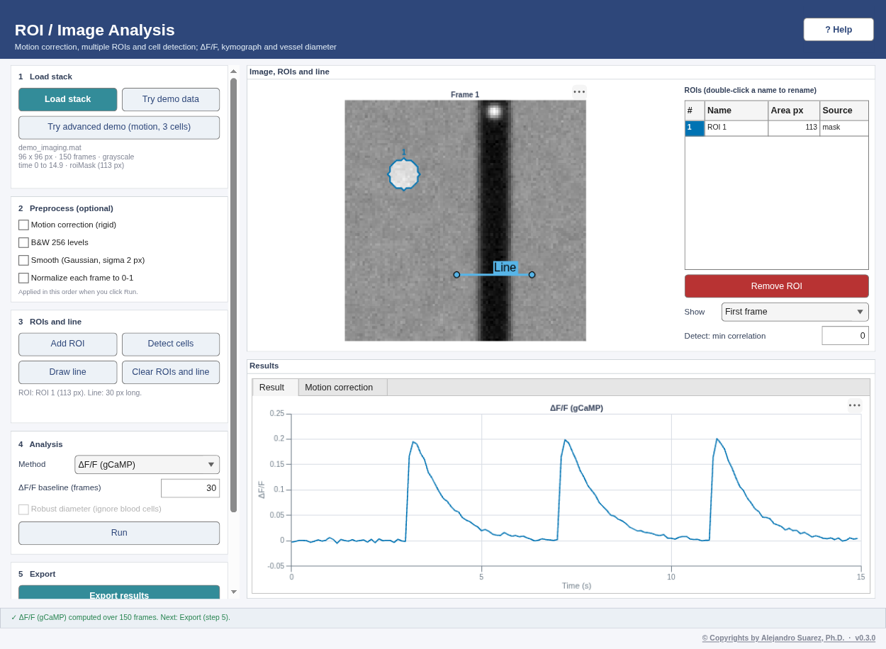
DEMO DATA — synthetic, generated by core/DemoData.mDemo data
- Data:
demo_imaging.mat, 96 × 96 px, 150 frames at 10 Hz (15 s). A dark vertical vessel at x = 60 whose diameter oscillates 12 ± 3 px (9–15 px) every 5 s; a bright red blood cell moving down 2 px/frame (20 px/s); a cell at (24, 30), radius 6 px with calcium transients (ΔF/F ≈ 1) at 3, 7 and 11 s. The cell'sroiMaskis in the file. - The demo selects ΔF/F with that mask (baseline = first 30 frames) and a line across the vessel from (45, 70) to (75, 70).
- ΔF/F: flat ~0 until 3 s, then three peaks of ~0.2–0.3 at 3, 7 and 11 s, each decaying in ~1–2 s. (The simulated calcium signal has ΔF/F ≈ 1, but it is added on top of the tissue background inside the ROI, so the measured ΔF/F of the ROI is smaller.)
- Vessel diameter (same line): a sine between ~9 and ~15 px with a 5 s period. Kymograph along the vessel (e.g. from (60, 5) to (60, 90)): slanted streaks with a slope of 2 px per frame.
- Advanced demo (Try advanced demo (motion, 3 cells)): 96 × 96 px, 150 frames at 10 Hz. Every frame is shifted by up to ±3 px (smooth random walk); three cells: cell 1 at (22, 24) with events at 4, 8.5, 13 s, cell 2 at (26, 78) at 5.5, 10.5 s, cell 3 at (82, 30) at 7, 12 s; the vessel at x = 60 (12 ± 3 px, period 5 s) and a bright red blood cell that crosses the diameter line (35, 64)–(85, 64) about every 3 s.
- Motion correction: the Motion correction tab shows dy and dx following the dashed true shifts (error < 0.3 px), max shift ≈ 3 px.
- Show → Correlation image: the three cells are bright disks (correlation ≈ 0.9), the vessel a bright band; Detect cells adds exactly Cell 1–3 (the vessel is rejected as too elongated).
- ΔF/F (Run): three traces, each peaking only at its own cell's event times.
- Vessel diameter: without Robust diameter the trace jumps to ~50 px whenever the blood cell crosses the line; with Robust diameter it follows the 9–15 px sine (error < 2.5 px) and the replaced frames are circled.
Inputs and outputs
In
.matwithstackorframes(H × W × N grayscale or H × W × 3 × N RGB; otherwise the first variable is used)- Optional in the .mat:
timeVecort(one time per frame),roiMask(logical H × W) orroiMasks(H × W × K, optionalroiNames), used as the first ROIs - Multi-frame TIFF: RGB frames are converted to grayscale (mean of the colour channels); time = frame index
Out
- .csv:
Timeplus one column per measure (Intensity, Movement, DFF; with several ROIs<measure>_<ROI name>), orDiameter_px(+Diameter_standard_px,Replacedwhen robust); for a kymograph, a matrix (first row = time) - .mat: struct
resultswith the series (one row per ROI),roiMasks/roiNames,roiMask(ROI 1),lineStart/lineEnd,motionCorrectionandshifts, and the preprocessing and diameter settings
Troubleshooting: 11 common problems
| Problem or message | What to do |
|---|---|
| "Could not draw a rectangle / line" | drawrectangle / drawline need the Image Processing Toolbox. Without it, save a logical roiMask in the .mat for ROI methods. |
| Run is disabled | The chosen method needs a ROI (Brightness, Movement, Both, ΔF/F) or a line (Kymograph, Vessel diameter); the step 3 card says which is missing. |
| "roiMask size does not match" | The mask must be H × W, the same size as one frame. |
| Time axis shows frames, not seconds | Add a timeVec (or t) with one value per frame to the .mat. |
| Load is slow / out of memory | Large TIFFs are read frame by frame into memory as double; crop or bin the stack first. |
| Detect cells finds nothing | Tick Motion correction first: residual motion makes every edge look correlated and raises the automatic threshold. Otherwise lower Detect: min correlation (e.g. 0.3; 0 = automatic). |
| Detect cells also picks up vessels or blobs at the border | Elongated structures (ratio > 3) and components outside 20–1000 px are rejected; after motion correction the border within the largest shift is ignored. Remove unwanted ROIs with Remove ROI. |
| Two touching cells become one ROI | Raise Detect: min correlation so they separate, or draw them with Add ROI. |
| Vessel diameter jumps for single frames | A bright blood cell crossing the line moves the half level. Tick Robust diameter (ignore blood cells); make the line extend at least one vessel radius beyond each wall so its ends sample the background. |
| Motion correction shifts look noisy / wrong | It corrects translation only (not rotation or warping) and needs structure in the image; very dim or uniform stacks give unreliable shifts. Untick it to go back to the raw frames. |
| ROIs are slightly off after turning motion correction on or off | ROIs and the line keep their pixel positions; re-run Detect cells or redraw them on the image you analyse. |
Response features
Signal Characterization
Turn each response into numbers (latency, onset delay, FWHM, AUC, rise / decay time, amplitude), compare groups of animals statistically and export publication figures. More on this pipeline.
Quick start
- Load data: click Load .mat file. The data type is detected (LDF segments, ERP / average, time series) and the number of series, Fs and time range are shown; the first series is plotted.
- Parameters: set the stimulus onset t0 (s), the baseline window (s) and the response direction. The plot shows t0 (dashed), the baseline window (shaded) and the detected peak and FWHM, so you can check them before extracting.
- Features: select the features (Ctrl/Cmd-click for several) and click Extract features.
- Export: check the table (click a row to plot that series) and click Export to CSV / MAT. Export figure… above the plot saves the selected trace as a publication figure.
- Groups & statistics tab (or Try group demo): in 1 Files and groups type a Group name and click Add files… (one .mat per animal); repeat for each group. The # column is the subject number: paired designs match #1 with #1, #2 with #2 (fix with ▲ Move up / ▼ Move down).
- Feature and test: choose the Feature, Value per (File (mean trace) recommended: one animal = one file), Onset t0 (s), Baseline (s) and Direction; then the Design (Paired, Unpaired or ANOVA for 2+ groups), the Method (Parametric or Nonparametric) and, for two groups, Compare A vs B (difference = B − A). Click Run test: the Plot tab shows every animal, pair lines, mean ± SEM (or Box plot) and the significance bracket; the Results tab lists test, statistic, df, p, effect size, 95% CI, n, a robustness check with the other test family, assumptions and a copy-ready report.
- Export: choose a format and click Export figure… (PDF / SVG / EPS vector, or PNG / TIFF at 300 or 600 dpi; 8.5 cm wide, 8 pt Helvetica, the window is not changed). Export values & report… saves the per-animal values (.csv plus a _report.txt) or the full result (.mat).
- Session / report (optional): in step 4 of either tab, Save session… stores the single file and every group file (with checksums), all settings and results; Open session… re-extracts the features and re-runs the test; Report (PDF)… writes a one-page summary. See Sessions and reports.
{kind=link}
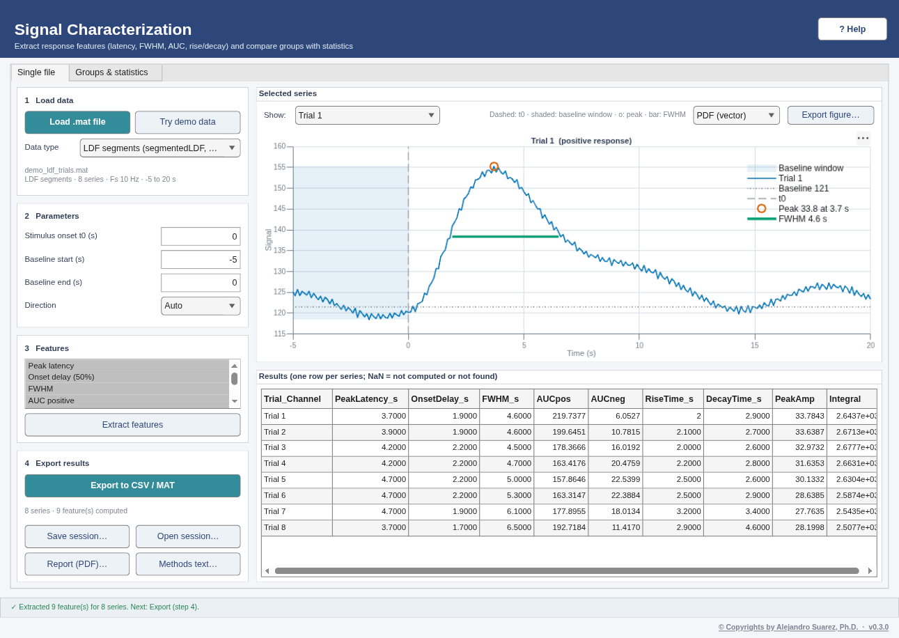
DEMO DATA — synthetic, generated by core/DemoData.mDemo data
- Data:
demo_ldf_trials.mat, 8 LDF trials from −5 to 20 s at 10 Hz (0 = stimulus onset). The demo sets t0 = 0, direction Auto, the baseline to −5–0 s and selects every feature. - Expected per trial (true response: ~120 PU baseline + 30 PU gamma-shaped hyperemia): peak latency ≈ 4 s, peak amplitude ≈ 30 PU, onset delay (50%) ≈ 1.9 s, FWHM ≈ 5.5 s, rise time (10–90%) ≈ 2.2 s, decay to 50% ≈ 3.4 s; positive direction.
- Trials differ by a few PU / tenths of a second because of vasomotion and noise, which is why the mean over trials is the number to report.
- Group demo (Try group demo): 24 files,
control_animal01.mat…drug_animal08.mat: the same 8 animals in Control, Stimulated and Drug, each with 8 LDF trials (−5 to 20 s at 10 Hz). True peak hyperemia 18, 30 and 24 PU; animals differ by ~3 PU, plus ~2.5 PU per animal and condition. - Paired t-test, Peak amplitude, Control vs Stimulated: Stimulated − Control ≈ +12 PU (95% CI roughly +9 to +15), p < 0.001, d_z ≈ 3 (simulated 3.3). Wilcoxon signed-rank: p ≈ 0.008 (all 8 animals increase; the smallest exact p possible with 8 pairs). Unpaired (Welch): also significant, with a smaller t.
- ANOVA: F(2, 21) large, p < 0.001; Tukey–Kramer Stimulated − Control ≈ +12 PU (p < 0.001); Drug lies ~6 PU from each of the others (usually, not always, significant). Peak latency ≈ 4 s in every group: no difference expected.
Inputs and outputs
In
- LDF trials from LDF Process:
segmentedLDF,segmentedTime(one series per trial) - LFP from Extract Ephys:
lfp_data,t_lfp(mean over channels = one series) - ERP export from LFP analysis, or any
.matwithtandy(ortandLDF)
Out
- .csv: one row per series, columns Trial_Channel, PeakLatency_s, OnsetDelay_s, FWHM_s, AUCpos, AUCneg, RiseTime_s, DecayTime_s, PeakAmp, Integral
- .mat:
data(the table as a cell array) andcolNames
Troubleshooting: 12 common problems
| Problem or message | What to do |
|---|---|
| "… does not contain a supported format" | The file needs segmentedLDF + segmentedTime, lfp_data + t_lfp, or t + y (or t + LDF). The alert lists the variables it found. |
| Series skipped (t and y lengths differ) | Each y must have one value per time point; check the saved variables. |
| Features are NaN | Check t0 (inside the time range?) and the direction; the plot shows where the peak was found. |
| Peak found on the wrong deflection | Set Direction to Positive or Negative instead of Auto. |
| "The paired design needs the same number of subjects in both groups" | Every animal needs one file in each group. Add the missing file or remove the extra one; the # column shows the pairing. |
| Wrong animals paired | The Results report lists every pair (1: fileA ↔ fileB). Files are added in alphabetical order; fix the order with ▲ Move up / ▼ Move down. |
| Run test is disabled | Add files to at least two groups. For a two-group design, choose two different groups in Compare. |
| "… value(s) excluded because the feature could not be computed" | The feature was NaN for those files (peak not found or never crossing 50%). Check Onset t0, Baseline and Direction, or choose another feature. |
| "The parametric and rank-based tests disagree" | Usually few animals or an outlier. Look at the Plot tab, and report the rank-based result or add animals. |
| Same animals in 3 or more conditions | The one-way ANOVA assumes independent groups; repeated-measures ANOVA is not available. Compare the conditions of interest with paired tests (corrected for multiple comparisons), or use a statistics package. |
| Export figure… is disabled | Run a test first (Groups & statistics), or load a file (Single file). |
| The journal wants Arial or another size | Export as PDF or SVG (vector) and change the font or size in Illustrator or Inkscape; the text stays editable. |
All pipelines · many files
Batch Processing
Run one analysis with the same settings on a whole folder and get one summary table. More on this pipeline.
Quick start
- Pipeline: choose what to run on every file: LDF: trials + response features, LFP: ERP (+ CSD) per channel, MUA: spike sorting per channel, Imaging: ROI dF/F and vessel diameter or Response features (any trace file). The line below says which files it reads. Try demo batch adds a few synthetic files with known answers and fills the settings.
- Input files: click Add folder... (every file of the folder that this pipeline reads) or Add files... (multi-select). Select files and click Remove to drop them; Clear empties the list. Files are processed in list order.
- Settings: one set of settings for every file (hover a field for its unit and meaning). They are the settings of the matching window: e.g. downsampling, filter and trial window for LDF; epoch, N1 window and electrode spacing for LFP; detection, clustering and random seed for MUA.
- Run: choose the Output folder... and click Run batch. The table and the status bar show which file is being processed; Cancel stops before the next file. A file that fails does not stop the batch: it gets a red row with the reason.
- Results: one row per file (LFP and MUA: per channel; imaging: per ROI). Green = ok, orange = warning (some channels failed), red = error, gray = skipped. Open folder shows the summary (.csv and .mat), the log (.txt) and, for LDF, the trial files; Export... saves a copy of the table (.csv, .xlsx or .mat).
{kind=link}
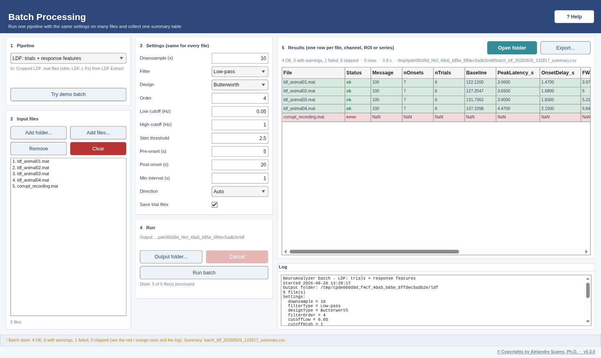
DEMO DATA — synthetic, generated by core/demo/demoBatch.mDemo data
- Data: Try demo batch writes synthetic files for the chosen pipeline, each with slightly different known answers, and fills the settings.
- LDF: 4 cropped recordings (200 s, 7 stimuli of 5 s). What you should get: 7 onsets and 6 trials per file (the last stimulus is too close to the end); peak latency ~3, 3.5, 4 and 4.5 s and peak amplitude ~20, 25, 30 and 35 PU (within ~2 PU); one trial file per recording in the trials folder.
- LFP: 3 recordings, 8 channels 100 µm apart. What you should get: 8 rows per file; the N1 is largest and the CSD sink (SinkChannel) is on channel 3, 4 and 5, with the N1 at ~12, 15 and 18 ms (roughly −100 to −140 µV on the sink channel).
- MUA: the demo MUA recording and a copy recorded at twice the gain, channel 4. What you should get: 2–3 units and the same spike count in both files (sorting does not depend on the gain); the evoked rate (5–55 ms after each stimulus) is several times the baseline rate.
- Imaging: 3 stacks with a cell (roiMask) and a vessel crossed by the line 25 50 63 50. What you should get: peak ΔF/F ~0.5, 1.0 and 1.5 at ~6.7 s (the second of two transients, which rides on the tail of the first) and mean vessel diameter ~10, 12 and 14 px.
- Response features: 4 trial files. What you should get: peak latency ~3, 3.5, 4, 4.5 s and peak amplitude ~20, 25, 30, 35 PU (one row per file); Series = Each series gives one row per trial (32 rows).
Inputs and outputs
In
- LDF: cropped
.matfiles from LDF Extract (stim,LDF,t,Fs) - LFP:
.matfiles from Extract Ephys (lfp_data,stim_data,lfp_fs,stim_fs;t_lfp,lfp_channelsoptional) - MUA:
.matfiles from Extract Ephys (mua_data,mua_fs;t_mua,mua_channels,stim_data+t_stimoptional) - Imaging:
.matwithstack(orframes), optionaltimeVec/tandroiMask/roiMasks, or a multi-frame TIFF - Response features: any file Signal Characterization reads (
segmentedLDF+segmentedTime,lfp_data+t_lfp,t+y,t+LDF)
Out
<name>_summary.csvand<name>_summary.mat(tablesummary+ structbatchwith the settings, files, statuses and log): columns File, Status, Message, then the pipeline's results<name>_log.txt: date, settings and one line per file (result or error)- LDF:
trials/<file>_segments.matper recording (segmentedLDF,segmentedTime,Fs), ready for LDF Average
Troubleshooting: 9 common problems
| Problem or message | What to do |
|---|---|
| A row is red with "Missing variable(s)" | The file was not saved by the step this pipeline expects (e.g. a raw LabChart export in the LDF pipeline). Use the files named under Inputs, or choose the matching pipeline. |
| A row is red with "Unable to read" / "not a binary MAT-file" | The file is damaged or not a MAT file. Remove it (select it, Remove) or re-export it; the other files are not affected. |
| LDF: "No stimulus onsets found above threshold" | The stimulus never crosses Stim threshold: lower it (e.g. 0.5 for a 1 V trigger, 2.5 for 5 V TTL). |
| LDF: "no complete trial fits" | Pre-onset + Post-onset is longer than the recording around the stimuli: shorten the windows. |
| LFP: "Channel(s) … not in the file" | The Channels field lists numbers the file does not have: clear it (all channels) or use the numbers shown in LFP Analysis. |
| MUA: a red channel row (file orange) with "Too few spikes for clustering" | That channel has almost no spikes at this threshold: lower Threshold (k) or Min spikes / cluster, or leave the channel out; the other channels of the file are kept. |
| Imaging: "needs a line" or no diameter columns | Type the line across the vessel in Line x1 y1 x2 y2 (px) (read the coordinates in ROI Analysis). |
| Imaging: "No ROI" | The stacks have no roiMask: draw and export ROIs in ROI Analysis, or measure Vessel diameter only. |
| The batch takes long | MUA sorting is the slowest part (seconds per channel): select only the channels you need. Cancel stops after the current file and still writes the summary of the files done. |
All windows
Sessions and reports (every window)
Save everything needed to repeat an analysis, reopen it later, and write a one-page PDF report. More on this pipeline.
Quick start
- Save session… (last step card of every analysis window): choose a file name, type optional notes (animal, condition, why these settings) and click Save session. The
.nasession.matfile stores the input file paths with their size, date and MD5 checksum, every setting, the results and your notes. - Open session…: choose a
.nasession.matsaved by the same window. The input files are reloaded and checked; the settings are applied and the analysis is re-run, so the window looks as it did when you saved. - If an input file has moved, put it next to the session file (it is found automatically) or choose it when asked. If a file has changed since the session was saved, the session still opens and the status bar warns you.
- Report (PDF)…: writes one A4 page with a picture of the window and, below it, the NeuroAnalyzer and MATLAB versions, the date, every input file with its MD5, the settings and the key results. Attach it to your lab notebook or use it for the methods section.
{kind=link}
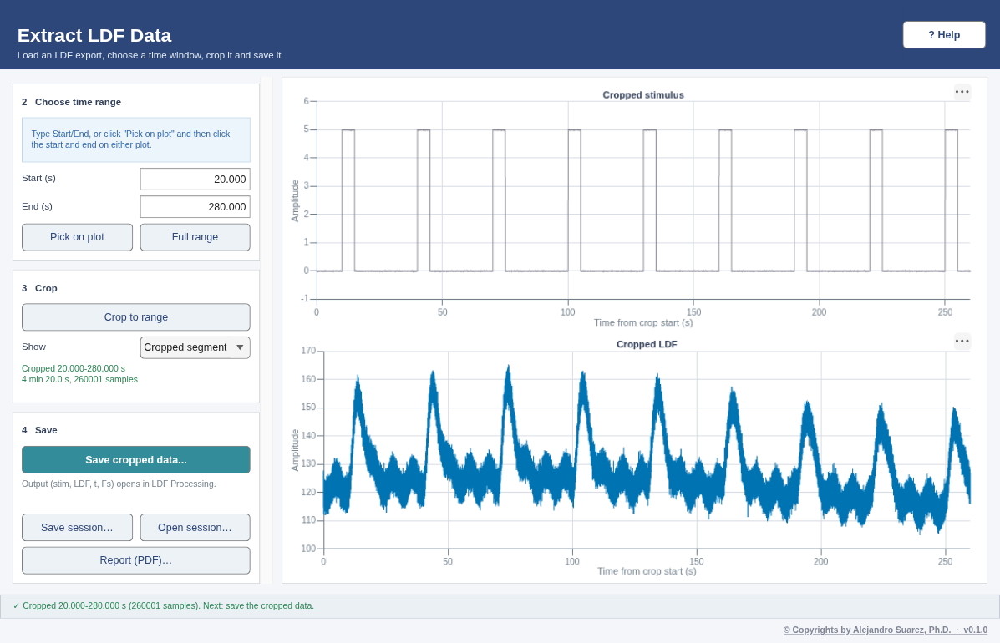
DEMO DATA — synthetic, generated by core/DemoData.mDemo data
- Try: in any window click Try demo data, run the analysis, then Save session…. Close the window, open it again from the launcher and click Open session…: the same plots and numbers come back.
- What you should get: the status bar says "Session … opened (saved … with NeuroAnalyzer v…)" and shows your notes. Report (PDF)… writes a one-page PDF (a few hundred kB).
Inputs and outputs
In
- A
.nasession.matfile saved by the same window (Open session) - The input files the session refers to, at their saved location, next to the session file, or chosen when asked
Out
<name>.nasession.mat: variablesessionwithapp,toolboxVersion,matlabVersion,os,created(ISO 8601),inputs(role, path, name, bytes, modified, md5),settings,results,summary,notes<name>_report.pdf: one A4 page (window image + versions, inputs with MD5, settings, key results)
Troubleshooting: 5 common problems
| Problem or message | What to do |
|---|---|
| "This session was saved by …, not by this window" | Open the session in the window named in the message (each window saves its own kind of session). |
| "Session not opened: … not found at …" | The input file was moved or renamed. Copy it next to the session file, or use Open session… again and locate it when asked. |
| "… has CHANGED since the session was saved (MD5 differs)" | The input file is not the one used when the session was saved (edited, re-exported or overwritten). The results may differ; use the original file if you still have it. |
| Report not written | Check that the folder is writable and that the PDF is not open in another program. The analysis itself is not affected. |
| The window picture in the PDF shows only one plot | exportapp is not available (MATLAB older than R2020b or no display); the largest plot was used instead. |
Learn by doing
Virtual lab
Plan and record a simulated experiment, analyse it yourself in the normal windows and get feedback. More on the virtual lab.
Quick start
- 1 Learn: read How LDF works (Learn tab).
- 2 Plan: type your name or ID (your data are made from it), then choose the probe position, stimulus, number of stimuli, time between them, baseline and sampling rate. The Plan tab draws the protocol.
- 3 Record: Record… writes a LabChart-style file; Open in Extract LDF starts the analysis (then Process LDF and Average LDF, saving a session in each).
- 4 Report your results: type the baseline, peak increase (PU and %), time to peak and trials, Attach sessions…, then Check my results. Show solution reveals the reference values; Save submission… writes a
.navlab.mat. - 5 Instructor: Grade a folder… writes
virtual_lab_grades.csv.
{kind=link}
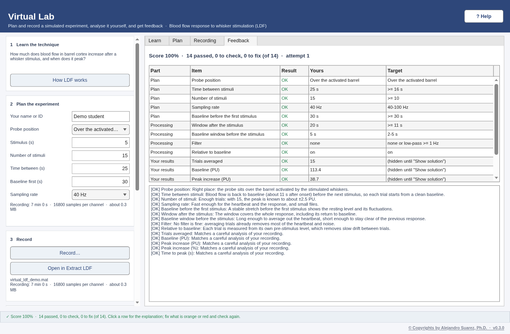
DEMO DATA — synthetic, generated by core/VirtualLab.mDemo data
- Try it in Help opens the window as Demo student with a good plan (probe over the barrel, 15 stimuli of 5 s every 25 s after 30 s of baseline, 40 Hz) and records it.
- True answer (noise-free): baseline 114.7 PU, peak increase +38.6 PU (33.6%) at 5.8 s after onset. A careful analysis of the recording differs by the noise (about ±3–4 PU with 15 trials).
Getting help
The Help window
Every window's ? Help button opens its topic in the Help window, which has a topic list in workflow order, Previous / Next, and ▶ Try it with demo data, which opens that window with its demo loaded. On the Welcome topic the button writes every demo file to a folder instead and offers to make it the Import folder.
{kind=link}